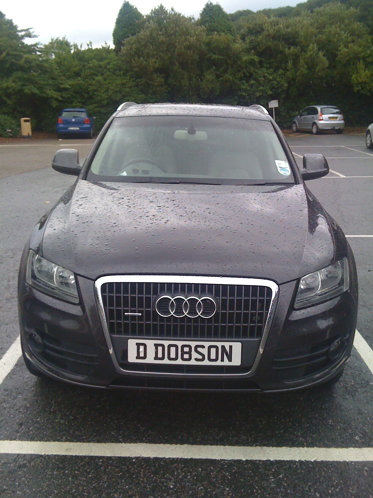

Wednesday, August the 3rd, 2011
back to: title, date or indexes
Dear Mr Key, writes Rob Howard, I recently spotted this vehicle parked in a charming village on the Cornish coast. Could it be that, far from being out of print, the Dobson canon continues to perform handsomely and that some secret illegitimate is pocketing the royalties? I think, as they tend to say, we should be told.
